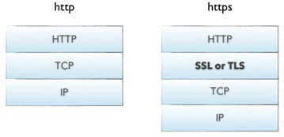

之前有梳理网络协议,就顺便讲了下HTTP协议,但是讲的不够具体,主要是简单讲了下HTTP协议的各个版本的过程,现在详细讲下HTTP协议,包含2.0以及https
详细说一下概念:
HTTP协议是Hyper Text Transfer Protocol,服务器传输超文本到本地浏览器的传送协议,基于TCP/IP通信协议来传递数据.HTTP协议工作于客户端-服务端架构为上。浏览器作为HTTP客户端通过URL向HTTP服务端即WEB服务器发送所有请求。Web服务器根据接收到的请求后，向客户端发送响应信息。
1.http请求:

2.http响应:

图片中每部分都很清楚了
附上常用的HTTP请求头与响应头(感恩)
https://itbilu.com/other/relate/EJ3fKUwUx.html#http-request-headers
3.http状态码
状态代码有三位数字组成，第一个数字定义了响应的类别，共分五种类别:
1xx：指示信息–表示请求已接收，继续处理
2xx：成功–表示请求已被成功接收、理解、接受
3xx：重定向–要完成请求必须进行更进一步的操作
4xx：客户端错误–请求有语法错误或请求无法实现
5xx：服务器端错误–服务器未能实现合法的请求
常见状态码：
200 OK //客户端请求成功
400 Bad Request //客户端请求有语法错误，不能被服务器所理解
401 Unauthorized //请求未经授权，这个状态代码必须和WWW-Authenticate报头域一起使用
403 Forbidden //服务器收到请求，但是拒绝提供服务
404 Not Found //请求资源不存在，eg：输入了错误的URL
500 Internal Server Error //服务器发生不可预期的错误
503 Server Unavailable //服务器当前不能处理客户端的请求，一段时间后可能恢复正常
附上HTTP之状态码(感谢)
http://www.runoob.com/http/http-status-codes.html
4.请求方法
根据HTTP标准，HTTP请求可以使用多种请求方法。
HTTP1.0定义了三种请求方法： GET, POST 和 HEAD方法。
HTTP1.1新增了五种请求方法：OPTIONS, PUT, DELETE, TRACE 和 CONNECT 方法。
GET 请求指定的页面信息，并返回实体主体。
HEAD 类似于get请求，只不过返回的响应中没有具体的内容，用于获取报头
POST 向指定资源提交数据进行处理请求（例如提交表单或者上传文件）。数据被包含在请求体中。POST请求可能会导致新的资源的建立和/或已有资源的修改。
PUT 从客户端向服务器传送的数据取代指定的文档的内容。
DELETE 请求服务器删除指定的页面。
CONNECT HTTP/1.1协议中预留给能够将连接改为管道方式的代理服务器。
OPTIONS 允许客户端查看服务器的性能。
TRACE 回显服务器收到的请求，主要用于测试或诊断。
HTTP工作原理
HTTP协议定义Web客户端如何从Web服务器请求Web页面，以及服务器如何把Web页面传送给客户端。HTTP协议采用了请求/响应模型。客户端向服务器发送一个请求报文，请求报文包含请求的方法、URL、协议版本、请求头部和请求数据。服务器以一个状态行作为响应，响应的内容包括协议的版本、成功或者错误代码、服务器信息、响应头部和响应数据。
5. HTTP 请求/响应的步骤
1、客户端连接到Web服务器
一个HTTP客户端，通常是浏览器，与Web服务器的HTTP端口（默认为80）建立一个TCP套接字连接。例如，http://www.baidu.com。
2、发送HTTP请求
通过TCP套接字，客户端向Web服务器发送一个文本的请求报文，一个请求报文由请求行、请求头部、空行和请求数据4部分组成。
3、服务器接受请求并返回HTTP响应
Web服务器解析请求，定位请求资源。服务器将资源复本写到TCP套接字，由客户端读取。一个响应由状态行、响应头部、空行和响应数据4部分组成。
4、释放连接TCP连接
若connection 模式为close，则服务器主动关闭TCP连接，客户端被动关闭连接，释放TCP连接;若connection 模式为keepalive，则该连接会保持一段时间，在该时间内可以继续接收请求;
5、客户端浏览器解析HTML内容
客户端浏览器首先解析状态行，查看表明请求是否成功的状态代码。然后解析每一个响应头，响应头告知以下为若干字节的HTML文档和文档的字符集。客户端浏览器读取响应数据HTML，根据HTML的语法对其进行格式化，并在浏览器窗口中显示。
例如：在浏览器地址栏键入URL，按下回车之后会经历以下流程：
1、浏览器向 DNS 服务器请求解析该 URL 中的域名所对应的 IP 地址;
2、解析出 IP 地址后，根据该 IP 地址和默认端口 80，和服务器建立TCP连接;
3、浏览器发出读取文件(URL 中域名后面部分对应的文件)的HTTP 请求，该请求报文作为 TCP 三次握手的第三个报文的数据发送给服务器;
4、服务器对浏览器请求作出响应，并把对应的 html 文本发送给浏览器;
5、释放 TCP连接;
6、浏览器将该 html 文本并显示内容;
6.一点误区的解释
Http是无状态的,服务器不知道客户端是什么状态。也就是说，打开一个服务器上的网页和你之前打开这个服务器上的网页之间没有任何联系.
HTTP协议的长连接和短连接，实质上是TCP协议的长连接和短连接。 HTTP/1.1起，默认使用长连接，用以保持连接特性。使用长连接的HTTP协议,不会立刻断开TCP连接，会在响应头有加入这行代码： Connection:keep-alive,但是要记住,只是减少了三次握手次数，请求次数还是有多少html文件，图片，css， js 就需要请求多少次的
7.HTTP2.0 : 随着时间http1.1有明显的压力的迹象
主要基于SPDY协议（是Google开发的基于TCP的应用层协议，用以最小化网络延迟，提升网络速度，优化用户的网络使用体验）
在开放互联网上HTTP 2.0将只用于https://网址，而 http:// 网址将继续使用HTTP/1.x
HTTP / 2的重点是提高传输性能并实现更低的延迟和更高的吞吐量。最重要的是，没有任何高级协议语义受到影响：所有HTTP头，值和用法都是和http1.1相同。也就是现有的所有web应用需要转http/2协议不需要修改任何http有关的字段。当然服务器必须支持且开启http/2。
他和1.1的不同主要包括:
1.HTTP/2采用二进制格式而非文本格式
2.HTTP/2是完全多路复用的，而非有序并阻塞的——只需一个连接即可实现并行
3.使用报头压缩，HTTP/2降低了开销
4.HTTP/2让服务器可以将响应主动“推送”到客户端缓存中
这样比起像HTTP/1.x这样的文本协议，二进制协议解析起来更高效、“线上”更紧凑，更重要的是错误更少。而多路传输能同时处理多个消息的请求和响应; 甚至可以在传输过程中将一个消息跟另外一个掺杂在一起。所以客户端只需要一个连接就能加载一个页面。而现在页面一般都要多次请求加载一个连接(connection)一次只提交一个请求的效率比较高, 多了就会变慢这样明显渐渐不合适.
当浏览器请求一个网页时，服务器将会发回HTML，在服务器开始发送JavaScript、图片和CSS前，服务器需要等待浏览器解析HTML和发送所有内嵌资源的请求。服务器推送服务通过“推送”那些它认为客户端将会需要的内容到客户端的缓存中，以此来避免往返的延迟。
8.HTTPS
最初,HTTP协议以明文方式发送内容，不提供任何方式的数据加密，如果攻击者截取了Web浏览器和网站服务器之间的传输报文，就可以直接读懂其中的信息，因此HTTP协议不适合传输一些敏感信息.
所以,为了解决HTTP协议的这一缺陷，需要使用另一种协议：安全套接字层超文本传输协议HTTPS。为了数据传输的安全，HTTPS在HTTP的基础上加入了SSL协议，SSL依靠证书来验证服务器的身份，并为浏览器和服务器之间的通信加密。
有主要4点区别
一、https协议需要到ca申请证书，一般免费证书很少，需要交费。
二、http是超文本传输协议，信息是明文传输，https 则是具有安全性的ssl加密传输协议。
三、http和https使用的是完全不同的连接方式，用的端口也不一样，前者是80，后者是443。
四、http的连接很简单，是无状态的；HTTPS协议是由SSL+HTTP协议构建的可进行加密传输、身份认证的网络协议，比http协议安全。

很明显最最关键的就是多了一层加密层
SSL（Secure Socket Layer，安全套接字层）：1994年为 Netscape 所研发，SSL 协议位于 TCP/IP 协议与各种应用层协议之间，为数据通讯提供安全支持。
TLS（Transport Layer Security，传输层安全）：其前身是 SSL，它最初的几个版本（SSL 1.0、SSL 2.0、SSL 3.0）由网景公司开发，1999年从 3.1 开始被 IETF 标准化并改名，发展至今已经有 TLS 1.0、TLS 1.1、TLS 1.2 三个版本。SSL3.0和TLS1.0由于存在安全漏洞，已经很少被使用到。TLS 1.3 改动会比较大，目前还在草案阶段，目前使用最广泛的是TLS 1.1、TLS 1.2。
过程如下图:

主要讲一下:客户端在接受到服务端发来的SSL证书时，会对证书的真伪进行校验
（1）首先浏览器读取证书中的证书所有者、有效期等信息进行一一校验
（2）浏览器开始查找操作系统中已内置的受信任的证书发布机构CA，与服务器发来的证书中的颁发者CA比对，用于校验证书是否为合法机构颁发
（3）如果找不到，浏览器就会报错，说明服务器发来的证书是不可信任的。
（4）如果找到，那么浏览器就会从操作系统中取出 颁发者CA 的公钥，然后对服务器发来的证书里面的签名进行解密
（5）浏览器使用相同的hash算法计算出服务器发来的证书的hash值，将这个计算的hash值与证书中签名做对比
（6）对比结果一致，则证明服务器发来的证书合法，没有被冒充
（7）此时浏览器就可以读取证书中的公钥，用于后续加密了
所以通过发送SSL证书的形式，既解决了公钥获取问题，又解决了黑客冒充问题，一箭双雕，HTTPS加密过程也就此形成.
那么代价是什么?
1.SSL 证书费用很高，以及其在服务器上的部署、更新维护非常繁琐
2.HTTPS 降低用户访问速度（多次握手)
3.网站改用HTTPS 以后，由HTTP 跳转到 HTTPS 的方式增加了用户访问耗时（多数网站采用302跳转）
4.HTTPS 涉及到的安全算法会消耗 CPU 资源，需要增加大量机器（https访问过程需要加解密）
但是解决了安全问题是很值得的.
参考(感恩):
关于HTTP协议，一篇就够了 - ranyonsue - 博客园
HTTP 2.0与HTTP 1.1区别 - FrankYou - 博客园
【HTTP】HTTPS 原理详解